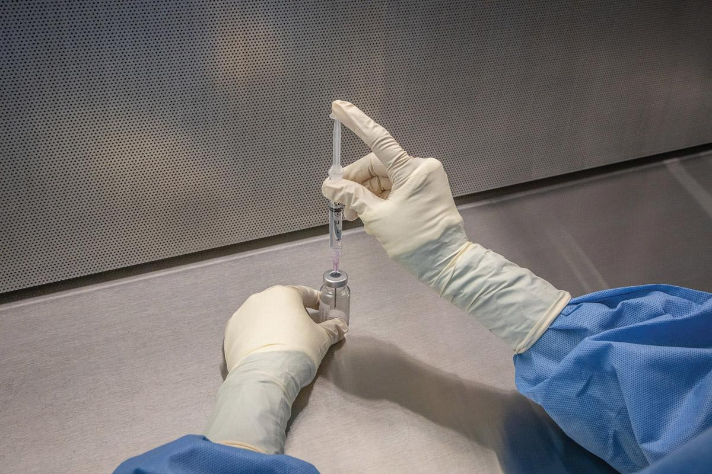
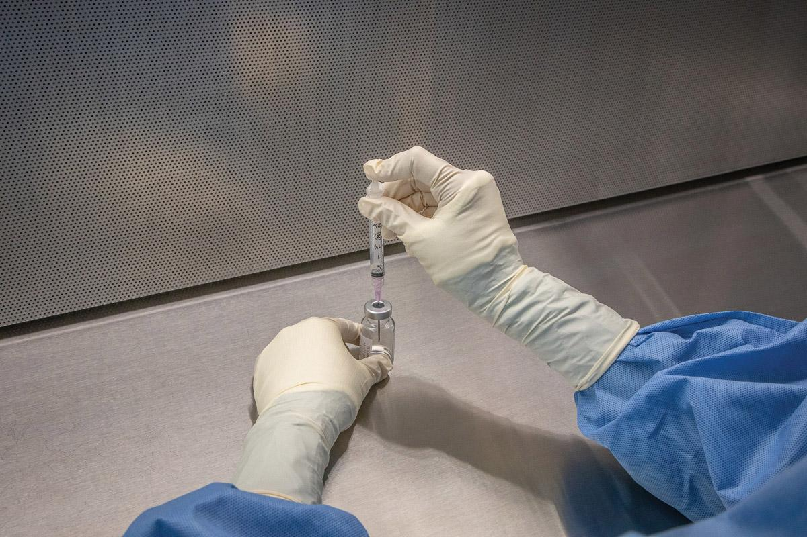
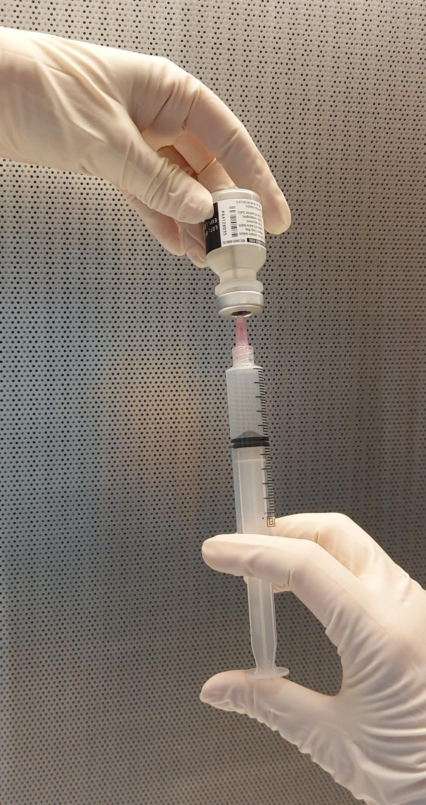
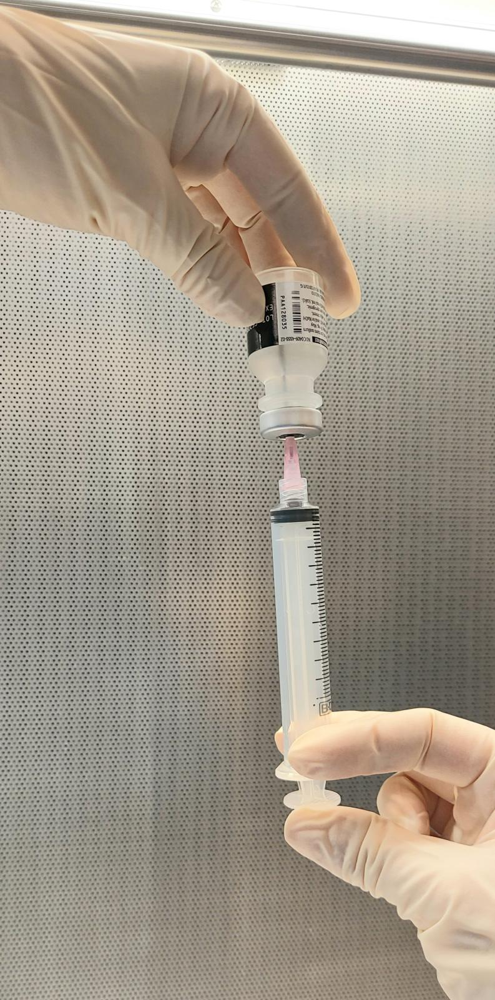
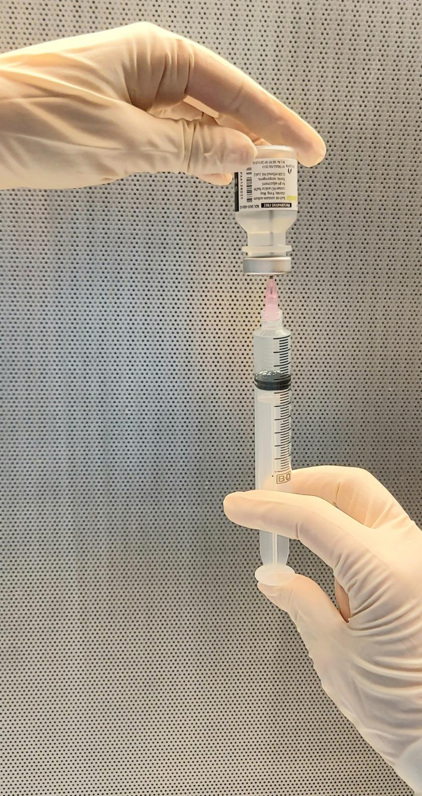
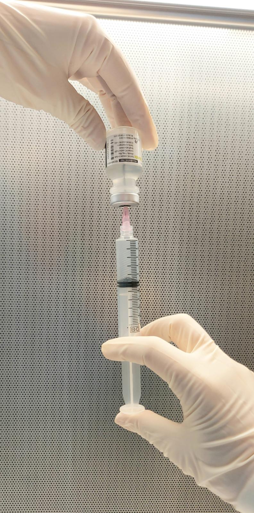
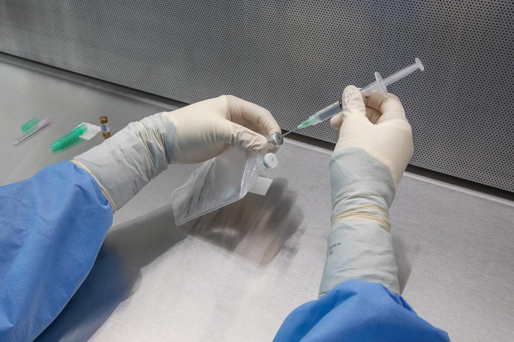
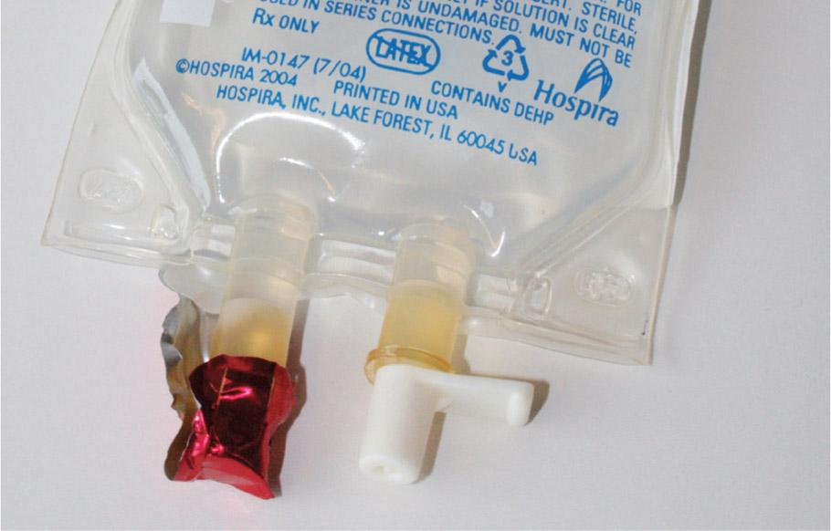

PART 2: TRAINING
11.6 Preview the Procedural Lab
Now that you, as a sterile compounding student, have a basic understanding of the components and critical sites of the supply items used in SVP preparation, you have the opportunity to preview—and subsequently perform—the sterile compounding of an SVP for two different scenarios while using aseptic technique. The first scenario provides practice in using the milking technique to add diluent to reconstitute a powdered drug vial. The second scenario provides practice in using a vented needle to add diluent to reconstitute a powdered drug vial.
First, read the Preview the Procedural Lab section. Then carefully read each step of the Procedural Lab section. Next, reinforce your understanding by watching the demonstration video. Once in the lab, your instructor will demonstrate the procedure, and then you will perform the procedure by following the steps in the Procedural Lab section. After sufficient practice, you will complete the competency assessment that will be observed by your instructor.
Note: This procedural lab requires the use of a horizontal laminar airflow workbench. For pharmacies that do not have this type of PEC, sterile compounding personnel should consult the Instruction Guide provided by the PEC’s manufacturer or their facility’s SOPs to determine which procedures may need to be adjusted to suit their PEC.
Anteroom Preparatory Procedures
For the purposes of this lab, you will prepare for the sterile compounding process in the anteroom. In practice, you may perform some of these preparatory procedures before entering the anteroom, depending on a facility’s SOPs. The anteroom provides a transition space for implementing the procedures discussed in Chapters 5–8 of this textbook, including:
- verifying the CSP label against the medication order
- performing pharmacy calculations to determine type, size, and number of supply items needed
- gathering and staging supplies
- performing hand hygiene and garbing procedures.
Verifying the CSP Label
Compare the medication order to the CSP label to verify that all information on the label matches the medication order exactly. Although in some facilities this step is performed by a pharmacist, it is considered best practice to have both a pharmacist and a sterile compounding technician perform this task. Implementing this double-check system helps to reduce the likelihood of a medication error.
Performing Pharmacy Calculations
Use the CSP label to determine the desired dose ordered by the prescriber. Retrieve the ordered powdered drug and determine how much diluent must be added to properly reconstitute the drug to its desired concentration. The desired concentration is typically determined by the drug manufacturer and is found on the label of the powdered drug. The label instructs the compounder to inject a specific amount of a diluent such as SWFI or sterile NS into the powdered drug to provide the desired concentration of the drug in a liquid, injectable form.
Once the drug has been reconstituted from its powdered form into its liquid, injectable form, the liquid is now in its concentrated form. The concentration listed on the powdered drug vial indicates the strength, or concentration, of the drug as it is in its final, reconstituted form. This strength, typically expressed as milligrams per milliliter (mg/mL), is called the drug’s final concentration or, simply, the concentration.
Use the final concentration given on the label of the powdered drug vial to perform the calculations needed to determine the volume of each ingredient you need to draw up to prepare the CSP. (For additional assistance on performing calculations, refer to Chapter 7 of this textbook.)
Workplace Wisdom
Sterile compounding personnel must understand the distinctions between a beyond-use date and an expiration date. Knowing these distinctions ensures that CSPs are safe and effective for patient administration.
A beyond-use date, also known as a BUD, is assigned by sterile compounding personnel to CSPs. The BUD is the date or date and time beyond which a CSP must not be used and must be discarded. This date/time is determined by multiple factors, including sterility of the starting ingredients, storage conditions, and drug stability. The BUD appears on all CSP labels, as shown in the CSP labels used in this chapter as well as in other chapters in this textbook.
An expiration date is assigned by a drug manufacturer and is dependent on the appropriate storage (temperature) of the unopened container. An expiration date is placed on the label of a drug vial.
Gathering and Staging Supplies
Once all calculations are complete, place the CSP label into a small plastic bag, place the medication order into a large plastic bag, and seal both bags. Gather and wipe down all of the necessary compounding supplies with an appropriate agent before bringing them into the clean side of the anteroom. (Note: Sterile compounding personnel should be aware that, when reconstituting a powdered drug vial, they should gather enough needles and syringes for two separate procedures: the drawing up of the appropriate volume of diluent and, subsequently, the drawing up of the appropriate volume of the reconstituted drug, unless these procedures are performed as a single step.)
Donning Garb
Now that you have assembled and wiped the exterior surfaces of necessary supply items, you must don garb, a requirement for working in the buffer room. Before donning garb, ensure that you are wearing closed-toed shoes and either a clean scrub uniform or other approved, lightweight, nonshedding clothing and that you have removed cosmetics, jewelry, and other items prohibited in the sterile compounding area. Then don shoe covers; a head cover and, if necessary, a facial hair cover; a face mask; and a gown. Apply an alcohol-based hand rub to all surfaces of hands and fingers and allow these surfaces to dry before donning sterile gloves. (Note: This latter procedure may also be performed in the buffer room.)
Due to time constraints, you will not perform hand-washing procedures during this procedural lab. Keep in mind that, in sterile compounding practice, handwashing is mandatory and must be performed prior to donning sterile gloves. If you are performing this procedural lab in a working buffer room, you must perform all hand hygiene and garbing procedures before entering the buffer room. (For additional assistance on the procedure for donning garb, refer to Chapter 8 of this textbook.)
Buffer Room Preparatory Procedures
When preparing SVPs for patient administration, sterile compounding personnel must diligently follow established buffer room procedures. These procedures, discussed in Chapters 8 and 9, may include the following actions:
- sanitizing hands with an alcohol-based hand rub
- donning sterile gloves
- cleaning and disinfecting the PEC.
Arranging and Preparing Supplies in the PEC
Upon entering the buffer room, place the transport basket or tray onto a clean table or cart. If the transport vehicle used is a cart, wheel it so that it is positioned away from the PEC’s prefilter. If not performed previously, sanitize your hands with an alcohol-based hand rub, allow your hands to dry thoroughly, and then don sterile gloves.
Wipe your sterile gloves with sterile 70% IPA and allow your gloved hands to dry thoroughly. Next, use low-lint wipers to wipe the exterior surfaces of supply items with sterile 70% IPA and allow the items to dry before introducing the items into the PEC. If a supply item is in a sealed container to maintain its sterility, the sterile item should be removed from the container as the item is introduced into the PEC and should not be wiped.
Place small supply items—such as the vials, needles, syringes, sterile 70% IPA swabs, and tamper-evident, sterile, adhesive seals—in the outer six-inch zone of the PEC, which is used as a staging area prior to bringing the supplies into the direct compounding area (DCA) of the PEC. Alternatively, small supply items may be placed to the left or right of the DCA.
SVP Compounding Procedure, Scenario One: Reconstitution Using the Milking Technique
With the small supply items arranged in the outer six-inch zone and the large supply items placed in the DCA, you are ready to begin the SVP compounding procedure. Wipe your gloves with sterile 70% IPA and allow your gloved hands to dry. Then start the procedure by bringing the vial containing the diluent into the DCA. Remove the flip-top cap, and place the cap into the start of a discard pile. Position the vial stopper so that it receives uninterrupted airflow from the high-efficiency particulate air (HEPA) filter. Next, bring a sterile 70% IPA swab package into the DCA so that it receives uninterrupted airflow from the HEPA filter, and carefully tear open the package. Remove the IPA swab and place the empty swab package into the discard pile. Then swab the vial stopper and place the used swab into the discard pile.
Next, bring the first syringe, which is used to draw up the diluent, into the DCA. Carefully remove the syringe from its outer wrapper without touching or shadowing the syringe tip. Grasp the barrel of the syringe and avoid placing the syringe onto the PEC’s work surface as this action could cause it to become contaminated. Place the syringe wrapper into the discard pile. If there is a cap on the tip of the syringe, carefully remove it and place it into the discard pile. Without touching or shadowing the syringe tip, position the syringe in your hand to allow adequate airflow to the syringe tip. Open the needle package, remove the capped regular needle, and hold it by its cap. Be sure to avoid touching or shadowing the needle hub. Using a twisting motion, attach the capped needle hub to the Luer-lock syringe tip. Temporarily place the needle-and-syringe unit onto the PEC’s work surface within the DCA.
Open a new, sterile 70% IPA swab package, remove the IPA swab, and place the swab on the PEC’s work surface, within the DCA. Place the empty swab package into the discard pile. Pick up the syringe and pull down on the flat knob of the syringe plunger to draw a volume of air into the syringe that is equal to the desired volume of the diluent. Holding the syringe by the barrel, carefully remove the needle cap, and place the cap onto the IPA swab. Be sure to have the open end of the cap facing the PEC’s HEPA filter to maintain adequate airflow over the cap.
Grasp the barrel of the syringe between your thumb and forefinger, as you would a pencil or dart, and rotate the barrel so that the needle bevel is pointed up toward the ceiling. Brace the vial against the PEC’s work surface and place the needle tip, bevel up, onto the vial stopper. Insert the needle into the vial using a slight upward rotation of the wrist. Keep the tip of the needle in contact with the vial stopper at all times to help avoid coring. There should be a very slight bend to the needle as it penetrates the vial stopper.
Invert the vial and inject air into the vial using the milking technique, thereby creating positive pressure that forces a volume of fluid from the vial into the syringe. Repeat this procedure until you have withdrawn a volume of fluid from the vial into the syringe that equals approximately 1 mL more than the desired volume.
Without removing the syringe from the vial and without blocking airflow from the HEPA filter to the critical sites of the needle-and-syringe unit and vial, brace the syringe against your palm, and tap the barrel of the syringe to force air bubbles up toward the needle. Alternatively, you may carefully tap the syringe against the work surface. Once all of the air bubbles from the syringe have gathered at the tip of the syringe, push up on the flat knob to expel the air and any extra fluid back into the vial, until the desired volume of bubble-free fluid remains in the syringe. Return the vial, with syringe attached, to the PEC’s work surface. Grasp the syringe at the barrel and carefully pull the syringe, with needle attached, from the vial.
Carefully recap the needle by holding the syringe by the barrel with one hand and the needle cap with your other hand. Then carefully slide the needle cap over the needle until you hear a click, indicating the cap has attached to the syringe tip. Place the capped needle-and-syringe unit onto the PEC’s work surface within the DCA. (For detailed information on the USP <797> protocol for these buffer room procedures, refer to Chapter 10.)
Next, bring the powdered drug vial into the DCA. Remove the flip-top cap, placing the cap into the discard pile. Position the vial stopper so that it receives uninterrupted airflow from the PEC’s HEPA filter. Pick up a sterile 70% IPA swab package, move it into an area of the DCA so that it receives uninterrupted airflow from the HEPA filter, and carefully tear open the package. Remove the IPA swab and place the empty swab package into the discard pile. Then swab the vial stopper and place the used swab into the discard pile.
Remove the needle cap from the diluent syringe and place the cap onto the IPA swab on the PEC’s work surface. Be sure to position the needle cap so that the open end of the cap is facing the HEPA filter. Grasp the barrel of the filled syringe and use aseptic technique to insert the needle, with the bevel up, into the powdered drug vial. Gently push down on the flat knob of the syringe and use the milking technique to gradually inject diluent into the powdered drug vial, thereby releasing air pressure from the vial into the syringe. Repeat this procedure until all of the diluent from the syringe has been injected into the powdered drug vial, thereby venting the pressure from the vial into the attached syringe. Grasp the syringe at the barrel and carefully pull the syringe, with needle attached, from the vial. Discard the needle-and-syringe unit into a sharps container.


Wipe sterile gloves with sterile 70% IPA and allow to dry thoroughly. Gently shake the vial to mix the diluent into the powder. Once the powder is completely dissolved, place the vial back into the DCA. Then bring the second syringe, which is used to draw up the reconstituted drug, into the DCA. Carefully remove the syringe from the outer wrapper without touching or shadowing the syringe tip. Grasp the barrel of the syringe and avoid placing the syringe onto the PEC’s work surface as this action could cause it to become contaminated. Place the syringe wrapper into the discard pile. If there is a cap on the tip of the syringe, carefully remove it and place it into the discard pile. Without touching or shadowing the syringe tip, position the syringe in your hand to allow adequate airflow to the syringe tip and then open the needle and hold it by its cap. Be sure to avoid touching or shadowing the needle hub. Using a twisting motion, attach the capped needle hub to the Luer-lock syringe tip. Temporarily place the needle-and-syringe unit onto the PEC’s work surface within the DCA.
Open a new, sterile 70% IPA swab package, remove the IPA swab, and place the empty swab package into the discard pile. Then swab the vial stopper and place the used swab into the discard pile. Using the milking technique, gradually withdraw the reconstituted drug from the vial into the syringe. Utilize the correct procedures to eliminate bubbles from the syringe and to expel the excess air and any excess fluid back into the vial. Then verify that you have drawn up the desired volume of reconstituted drug into the syringe.




Return the vial to the work surface, and then grasp the syringe at the barrel and pull the syringe, with needle attached, from the vial. Carefully recap the needle and place the capped needle-and-syringe unit onto the PEC’s work surface within the DCA. Arrange the supply items and ingredients used in the preparation of the CSP next to the filled syringe to await a verification check by a pharmacist or your instructor.
Once the check has been completed, wipe your gloves with sterile 70% IPA and allow your gloved hands to dry. Then, reposition the IVPB and needle-and-syringe unit within the DCA of the PEC so that the injection port of the IVPB base solution bag and the entire needle-and-syringe unit receive uninterrupted airflow. Open a new, sterile 70% IPA swab package , remove the IPA swab, and wipe the injection port of the IVPB base solution bag. Place the swab onto the PEC’s work surface, directly under the IVPB injection port. Use aseptic technique to carefully inject the medication into the IVPB bag; then remove the needle-and-syringe unit from the bag. Immediately discard the used needle-and-syringe unit into the sharps container. Wipe sterile gloves with sterile 70% IPA and allow to dry thoroughly. Affix a tamper-evident, sterile, adhesive seal to the injection port of the IVPB bag.
Hold the IVPB bag up toward the light and squeeze it, examining the bag for leaks, precipitates, or other evidence of incompatibility. Label the CSP and place your initials in the appropriate location on the CSP label. Dispose of the waste, place the CSP into the transport vehicle, and return the vehicle to the anteroom.
SVP Compounding Procedure, Scenario Two: Reconstitution Using a Vented Needle
The initial steps in this SVP compounding procedure are similar to the procedure you just performed. The point at which the two procedures diverge occurs once you withdraw the diluent in preparation for reconstitution of the powdered drug. Rather than using the milking technique to reconstitute the powder, you use a vented needle. This type of needle is specially designed to inject diluent into a powdered drug vial while simultaneously venting the air pressure that builds up inside of the vial during reconstitution (see Figure 11.1).
View long description Hide description
The labels are as follows: syringe with vented needle inserted with firm downward motion, diluent inside syringe, lateral venting of air through the vial stopper, needle sheath, needle tip, diluent being added to powdered drug in the vial, and powdered drug inside the vial.
With that in mind, follow the steps described in the first procedure, up through the step in which you draw up the appropriate amount of diluent. Then pick up the filled diluent syringe and gently pull down on the flat knob of the plunger to draw a small volume of air (approximately 0.5 mL) into the syringe. This action pulls any fluid trapped in the attached needle from the needle into the syringe. Carefully recap the needle and then remove the needle and discard it into the sharps container. Wipe sterile gloves with sterile 70% IPA and allow to dry thoroughly. Using aseptic technique, and without contaminating the syringe or needle, bring a vented needle package into the DCA, remove the capped vented needle, and carefully attach the needle to the syringe tip. Place the syringe with the attached vented needle onto the PEC’s work surface within the DCA. Place the empty needle package into the discard pile.
Remove the flip-top cap from the powdered drug vial within the DCA. Open the package of a new, sterile 70% IPA swab, remove the IPA swab, and wipe the vial stopper. Then place the swab into the discard pile. Open the package of a new, sterile 70% IPA swab and place the swab onto the PEC’s work surface within the DCA. Place the empty swab package into the discard pile. Remove the cap from the vented needle and place the cap onto the IPA swab. Be sure that the open end of the cap faces the PEC’s HEPA filter, so that the cap receives uninterrupted airflow. Grasp the barrel of the filled syringe as you would a dart. Without regard to the position of the razor tip and without any bend to the needle, insert the vented needle into the vial. Use a direct, downward motion and a gentle stab, ensuring that the sheath of the vented needle is firmly seated in the vial stopper.


Push down on the flat knob to inject all of the diluent from the syringe into the powdered drug vial. Notice that the vented needle removes the positive pressure typically created when injecting fluid into a vial. This change is evident because the syringe plunger is not forced back toward the compounder, as is the case when positive pressure is created within a vial. As the vented needle vents air out of the vial, the syringe plunger moves easily and completely through the syringe barrel toward the syringe tip during fluid injection.
Once all of the diluent has been injected into the vial, grasp the barrel of the syringe between your thumb and forefinger and remove the needle-and-syringe unit from the vial. Discard the needle-and-syringe unit immediately into the sharps container. Wipe sterile gloves with sterile 70% IPA and allow to dry thoroughly. Gently shake or swirl the vial to mix the diluent into the powder.
Once the powder has been completely reconstituted, prepare a new syringe by aseptically attaching a regular needle to the tip of a new syringe. After adding an appropriate amount of air into the syringe, use proper technique to insert the needle into the reconstituted drug vial. Invert the reconstituted drug vial and, using the milking technique, pull down on the flat knob of the plunger to draw an appropriate amount of reconstituted drug into the syringe.
Use aseptic technique to remove bubbles from the syringe and then return the vial with attached needle-and-syringe unit to the PEC’s work surface. Remove the needle-and-syringe unit from the vial and carefully recap the needle. Place the filled syringe—with attached, capped regular needle—on the PEC’s work surface within the DCA.
Arrange the supply items and ingredients used in the preparation of the second CSP on the PEC’s work surface next to the filled syringe to await a verification check by a pharmacist or your instructor. Once the check has been completed, wipe your gloves with sterile 70% IPA and your gloved hands them to dry. Then reposition the IVPB base solution bag and needle-and-syringe unit within the DCA of the PEC so that the injection port of the IVPB bag and the entire needle-and-syringe unit receive uninterrupted airflow.
Open a new, sterile 70% IPA swab package, remove the IPA swab, and place the empty swab package into the discard pile. Wipe the injection port of the IVPB bag with the swab and place the swab onto the PEC’s work surface, directly under the IVPB injection port. Use aseptic technique to carefully inject the medication into the IVPB bag; then remove the needle-and-syringe unit from the bag. Immediately discard the used needle-and-syringe unit into the sharps container. Wipe sterile gloves with sterile 70% IPA and allow to dry thoroughly. Affix a tamper-evident, sterile, adhesive seal to the injection port of the IVPB bag.


Examine the IVPB bag for leaks, precipitates, or evidence of incompatibility. If the bag is free of these issues, affix the label to the IVPB bag, add the BUD, and initial the label where indicated. Place all waste from the discard pile and any nonsharps waste from the PEC’s work surface into the waste container.
Place the CSP and any remaining supply items into the transport vehicle and return these items to the anteroom. Then remove garb according to the procedures outlined in Chapter 8.
Upon leaving the anteroom, you will either place the CSP into an appropriate storage location based on the medication’s storage requirement, or send the CSP for administration to the patient.